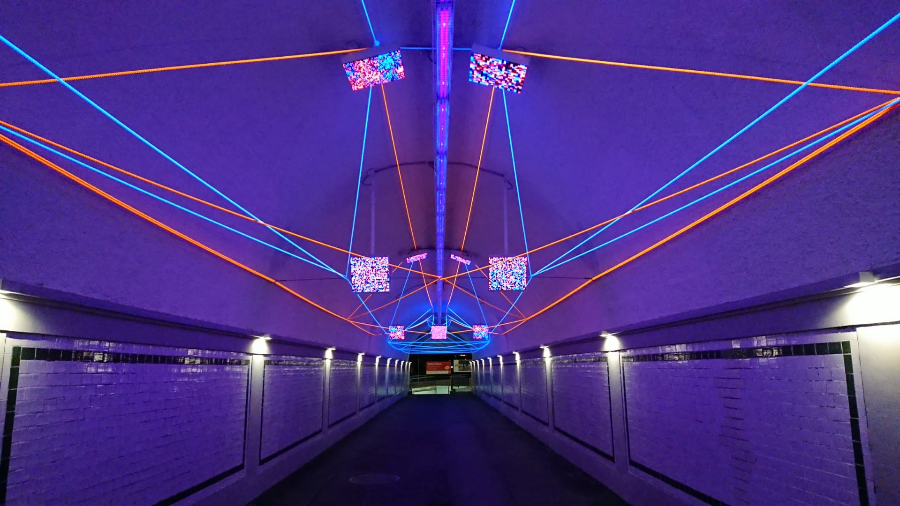

[11/2023] -
“Quality of Life” Label!
Our project “Remotely-assisted Enhanced Mirror Therapy (REMiT)” has been awarded with the “Quality of Life” label from the Fondation Dalle Molle. With the VRHEM project we developed a system leveraging VR technology and a hand exoskeleton (provided by emovo) to enahance traditional Mirror Therapy.
With REMiT we build on top of this to unlock telemedicine features: we allow therapists to remotely connect with their patients and supervise the therapy session.
[11/2023] -
New RAS Article
Our article “Self-Supervised Prediction of the Intention to Interact with a Service Robot” has been published on the Robotics and Autonomous Systems (RAS) journal.
[11/2022] -
Demo Deployed at Swiss Robotics Days 2022
We were pretty busy during the Swiss Robotics Days 2022. Hundreds of people visited our boot to try our demo. Its ease of use made it accessible and funny even for children :D
Check our research on pointing based interactions!
[09/2022] -
Nanocopter AI Challenge at IMAV22
Our team won the 1st Nanocopter AI Challenge which took place at IMAV2022 in Delft.
[06/2022] -
Innosuisse grant for VRHEM
Our project titled “Virtual Reality and Hand Exoskeleton for Mirror Therapy: a Feasibility Study (VRHEM)” has been granted by Innosuisse - Swiss Innovation Agency
[06/2022] -
Publication at CASE 2022
Our paper “Selecting Objects on Conveyor Belts Using Pointing Gestures Sensed by a Wrist-worn Inertial Measurement Unit” will be published at the 2022 IEEE 18th International Conference on Automation Science and Engineering (CASE).
[05/2022] -
Publication at CIRP 2022
Our paper Towards the integration of a pointing-based human-machine interface in an industrial control system compliant with the IEC 61499 standard” will be published in the Proceedings of the 55th CIRP Conference on Manufacturing Systems 2022.
[01/2022] -
Publications at HRI 2022
Our works “Interacting with a Conveyor Belt in Virtual Reality using Pointing Gestures” and “PointIt: A ROS Toolkit for Interacting with Co-located Robots using Pointing Gestures” (code here) will be published at the 17th Annual ACM/IEEE International Conference on Human-Robot Interaction (HRI 2022).
[10/2021] -
New PLR Article
Our article “Semantic segmentation on Swiss3DCities: A benchmark study on aerial photogrammetric 3D pointcloud dataset” has been published on the Pattern Recognition Letters (PRL) journal. This is the result of the collaboration we had with Nomoko. Check my related implementation of a 3D Point Cloud Segmentation model.
[03/2021] -
Publication at ICRA 2021
Our paper “Pointing at Moving Robots: Detecting Events from Wrist IMU Data” will be published at the 2021 IEEE International Conference on Robotics and Automation (ICRA).
[09/2019] -
NeuralRope#1 is Live
The art installation featuring a neural network (implemented by my colleagues and me) running live at the Besso’s tunnel in Lugano is now open. 
[05/2019] -
Publication at ICRA 2019
Our paper “Proximity Human-Robot Interaction Using Pointing Gestures and a Wrist-mounted IMU” will be published at the 2019 International Conference on Robotics and Automation (ICRA).
[03/2019] -
Best Video Award at HRI 2019
Our video “Pointing Gestures for Proximity Interaction” got the Best Video Award at the 14th ACM/IEEE International Conference on Human-Robot Interaction (HRI2019). You can find related research here.
{kind=link}
{kind=link}
{kind=link}
{kind=link}
{kind=link}
{kind=link}